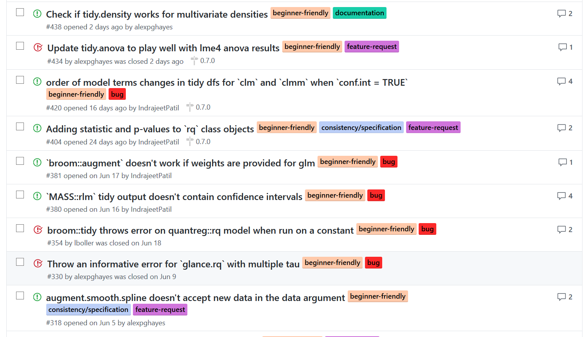

![]()
Today is the last day of my summer internship with RStudio. This is the first year that RStudio has had an official internship program, and I couldn’t be happier to have been a part of it.
My mandate for the summer has been to make broom better. My project was advised by both Dave Robinson and Max Kuhn. Dave originally wrote the broom package and acted as my primary mentor. Max got to sign all my paperwork and answer an unending stream of questions over Slack while he was trying to get work done.
Logistics
After submitting my application in March, I had video interviews with both Dave and Max1. Apparently things went well because a few days later RStudio sent me some paperwork to sign. Onboarding was all done online and was quick and painless. I started work in early June. I spent my second week on the job in Nashville for RStudio’s work week, where I met most of the RStudio employees and other interns. The rest of the summer I worked from home.
RStudio & Work Week
RStudio work week was a blast. I spent the first day star-struck. For the most part we were working, but there were interludes for an intern lunch and a couple short presentations. Each work day finished with a round of lightning talks from RStudio employees and Vandy biostats professors and students. Never before in my life have I seen so many fantastic and hilarious presentations in such a short period of time.
RStudio also had entertainment and dinner planned at a Nashville venue each evening. This was a nice way to put faces to names given that the company is mostly remote.
More than anything, I was surprised by how personable and empathetic everyone was. I’ve never worked for a tech company before, and I had originally envisioned a somewhat introverted and nerdy cast. This could not have been further from the truth. As I talked with other employees and tried to figure out exactly what RStudio does, people kept emphasizing the importance of empathy paired with technical skills.
I also finally learned how RStudio makes money: they sell professional products to other companies. These products are RStudio Server Pro, Shiny Server Pro, and RStudio Connect, all of which facilitate some form of shared internal data science infrastructure. I still haven’t used them but I have a vague idea of when they might be useful.
Development approach
Working with Dave was incredibly empowering. I highly recommend working with Dave if you ever get the chance.
Our general strategy was to have one or two video calls each week. Typically we each had some priorities for broom development and would set priorities and hash out any major decisions together. Occasionally I’d pitch Dave on some overambitious project – he pretty much was always all in.
For the most part I had free rein to make pretty much whatever changes I felt like. Dave would occasionally comment on issues, but for the most part I was just having at on my own. This freedom was awesome.
What I worked on
The big win of the summer was the broom 0.5.0 release. broom 0.5.0 featured:
- A move to tibble output instead of data frames
- An entirely new test suite
- A complete documentation overhaul
- Several new vignettes
- ~10 new tidiers (mostly contributed)
- Tons of bug fixes (mostly contributed)
I won’t rehash the details, which you can find at the tidyverse blog post I linked to above, but suffice it to say the release was pretty big. A couple weeks ago I gave a presentation to the tidyverse team on my work; those slides (rough) are here.
Next steps for broom
Since the broom 0.5.0 release I’ve been focused on making broom more extensible and consistent. So far this has included:
- Moving broom into the
tidymodelsorganization - A new approach to exporting generics
- Moving the test suite to the
modeltestspackage - Another vignette on extending broom.
- A new approach to standardized return documentation
- Experiments with rewriting the core
augment()logic for increased consistency
You can track broom’s long term goals in this thread.
Things I learned
Technical takeaways
Broom is basically three R generics plus a hundred or so methods for each of those generics. None of the methods are especially long – I’d be surprised if any is more than 100 lines of code. This means that most of the technical problems in broom are isolated and easy to fix, because they don’t interact with other moving components (Dana and Tim, the ggplot2 and Shiny interns would sometimes spends several days on the same heinous bug, which I fortunately avoided!).
The hard part of broom is not the technical aspect of writing the tidiers, but rather the design aspect of deciding what tidiers should do. Especially for models that you’ve never used before, this can be unclear.
I will say that working with model objects in R is a special kind of frustrating in which everybody partially follows some conventions, but you never know which ones2. For the first time in my life I found myself using test driven development.
I didn’t produce the cleanest git history of all time, but I also didn’t bork anything up massively either, which I consider a success. I did break the build twice (?), so apologies if that affected you.
At the beginning of the summer, RStudio offered me a laptop to develop on, which I declined. That was a mistake. My personal computer is getting old and, more critically, runs Windows, which made some development tasks painful (revdep checks for example). The time to get to familiar with a fast new MBP from RStudio was definitely work it.
Open source
I spent the first two weeks of my internship on full time bug-resolution and PR duty. broom relies on contributors for bug reports, feedback on documentation, development ideas and sanity checks. Perhaps most importantly, writing code is more fun when you know people are using it3.

My takeaways from this time was that community matters. A lot. I was surprised by the number of PRs from 12+ months ago that came back to glorious life. In general, I tried to bring enthusiasm to all my Github activity. I also embraced the emoji more fully as a tool for clarifying tone.
I’m realizing that my willingness to contributor to open source projects (and even to use other packages) has a lot to do with how I feel about the community. Life is short, and I like writing code for kind people. The broom contributors have been fantastic to work with, and I look forward to continued collaboration.
I’ve adopted a philosophy of Merge now, refactor later. Merged PRs generate enthusiasm, and if you need to go back and make some changes down the line, that’s okay in a project like broom. Similarly, I’ve tried to remember to have all contributors list themselves as contributors in the package description: if you put in the time to make a PR, you should get credit for it.
It’s become increasingly clear that broom’s success depends on high quality PRs. The people who write new tidiers typically have domain knowledge that Dave and I don’t, and it’s best to have a frequent user of a model write the tidying methods. A large portion of the summer has been spent writing documentation to make it easier to contribute these tidiers.
Working remotely
I’m a fan of working remotely. Personally, I tried to stick to the 9 - 5 schedule fairly closely, with exceptions for errands and bike rides. It’s nice to not have someone looking over your shoulder, but I definitely found that I needed to be proactive about get work done. When I deviated too far from my schedule I found that I wasn’t as productive and that my stress levels went up.
This internship was also my first 40 hour / week job. Writing code for 8 hours a day is exhausting. I started drinking a second coffee at 5 pm to kick my brain back into gear for socializing and getting out of the house. I worked in a coffee-shop one day a week or so.
I also started scheduling social time a few days ahead of time, because if I didn’t I found I wasn’t leaving the house enough. I was lucky to be living with my hyperactive family this summer, but anticipate that I would have needed to be even more socially proactive if I were working remotely in an apartment on my own.
What was most rewarding
The best of my summer was the success of the Beginner Friendly tag on Github issues. A number of people make their first ever PRs to broom, and that made me really happy. I remember having a hard time getting into open source, and I’d like to make that transition easier for others if I can (keep an eye for an upcoming post on how to make your first PR!).

I also enjoyed feeling empowered to make design decisions for broom and the level of freedom I had in setting my own goals and playing around in the code base.
Spending time with the other interns was another highlight. We had a weekly intern-only coffee chat and private slack channel that featured a lot emotional support, technical support and the party parrot emoji.
Finally, working with broom has exposed me to a broad variety of statistical models. Over the course of the summer I’ve been writing up and slowly revising an essay on software abstractions for modeling software. Working on broom has inspired a number of interesting conversations in this vein that I look forward to continuing.
What could have gone differently
In somewhat typical fashion, I started way more projects than I could finish. Trying to wrap these up, or even just document their current status, has been somewhat stressful.
The one downside of my particular supervision situation was a lack of code review. It would have been nice to get some feedback on my code.
Really, though, I have no complaints and would do it all again in a heartbeat. Working on modeling interfaces for RStudio has been the dream job and I hope I have opportunities to do similar work in the future.
Thank you!
My summer would not have been possible without RStudio’s internship program. Thanks to everyone who answered my questions in the RStudio slack and on Github, especially Hadley, Jenny and Jim. Dave and Max deserve special mention not only for being fantastic mentors, but also for putting up with a large number of my uninformed but nonetheless strongly held opinions.
If you find yourself applying to an RStudio internship program in the future, feel free to reach out on Twitter or to shoot me an email.
Footnotes
I had met both Dave and Max before these calls. I met Dave at Data Day Texas 2018 in January. I’d emailed Max some modeling questions earlier in the year, and had made some PRs to both
broomandrecipes. I’d also met Hadley several times through the Rice Statistics department.↩︎If you’re involved in modeling package development, check out
principles, a collection of notes on good practices for developing modeling packages.↩︎I’ve also found that my willingness to write code is much higher when I have write access to a repository. There’s just less friction getting things done.↩︎